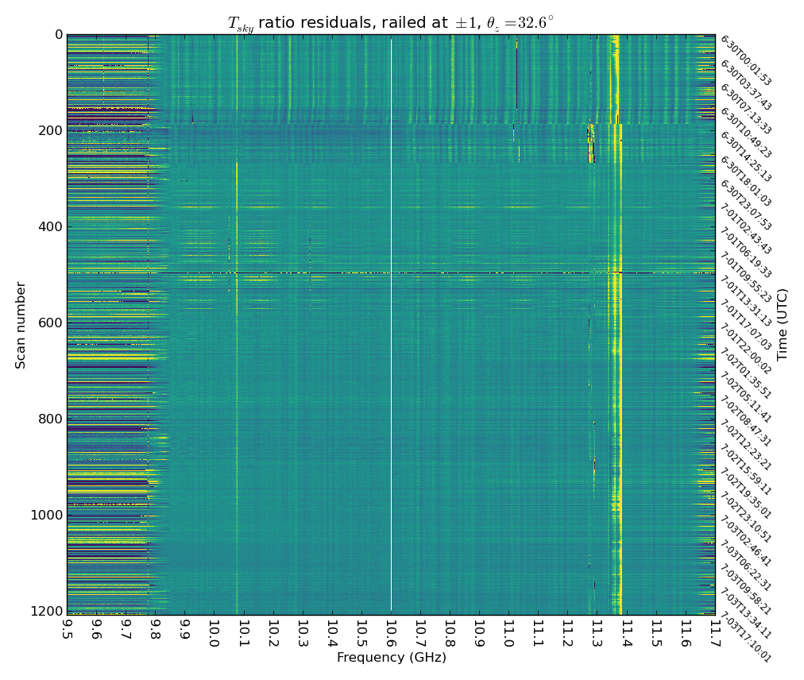
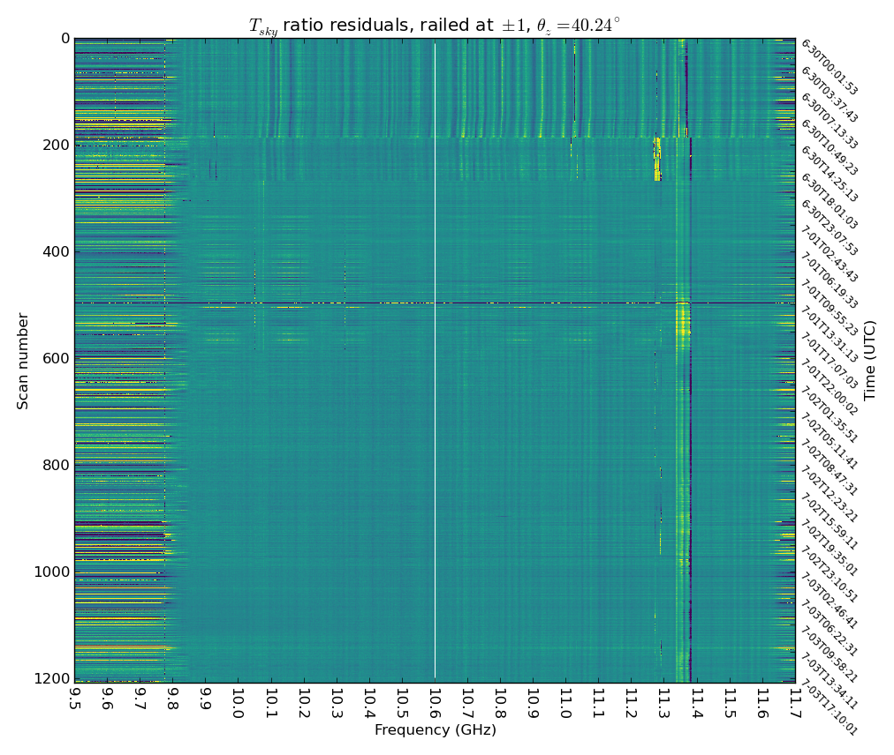
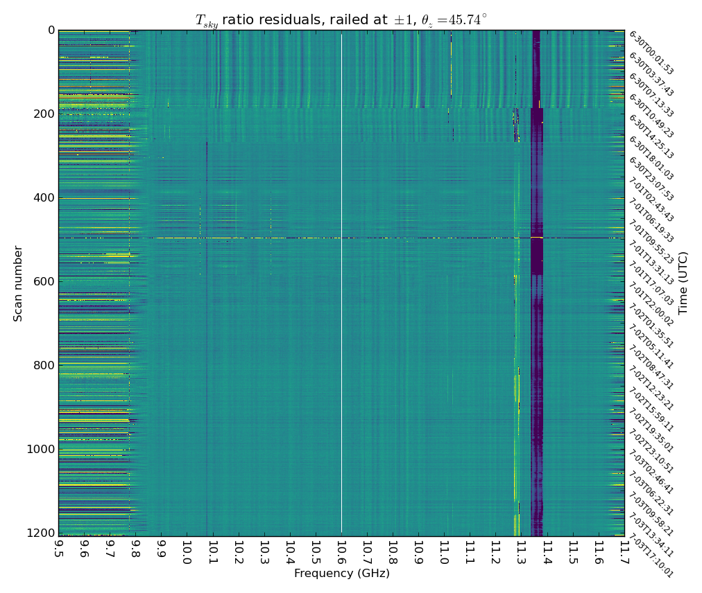
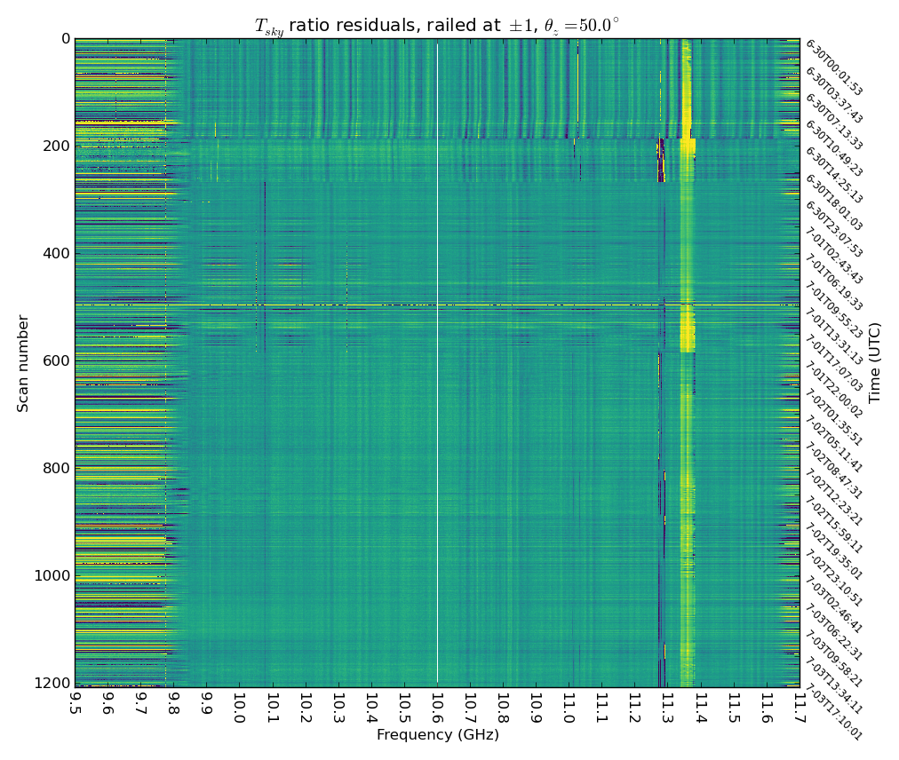

Last edited July 6, 2016 (JXK)
When I refer to the "measured ratio", I mean this quantity: \begin{equation} R\equiv\frac{V^2(\theta_z)-\overline{V^2}}{V^2(\theta_z=20^\circ)-\overline{V^2}} \end{equation} $R$ is calculated over an individual scan, i.e. $\overline{V^2}$ refers to the mean spectrum in that scan only. The purpose of subtracting this mean is to cancel out the additive contributions of $T_{sys}$ and $T_{iso}$ (e.g. galactic synchrotron and the CMB). We hope that \begin{equation} R=\frac{G\big[(T_{sky}(\theta_z) + T_{sys} + T_{iso}) - \overline{(T_{sky} + T_{sys} + T_{iso})}\,\big]}{G\big[(T_{sky}(\theta_z=20^\circ) + T_{sys} + T_{iso}) - \overline{(T_{sky} + T_{sys} + T_{iso})}\,\big]}=\frac{T_{sky}(\theta_z)-\overline{T_{sky}}}{T_{sky}(\theta_z=20^\circ)-\overline{T_{sky}}} \end{equation} where the relation we seek to verify is: \begin{equation} T_{sky}=T_{z}\,/\cos\theta_z \end{equation} For this approach to work, $\overline{T_{sys} + T_{iso}}$ must equal $T_{sys} + T_{iso}$ for each $\theta_z$. The gain must also be the same for each measured spectrum, which we think is true as long as we're only looking at the cold sky (gain is linear on the order of $\Delta T_{sky}$).
When I refer to the "expectation value", I mean this quanity: \begin{equation} \left< R \right>\equiv\frac{\mathrm{am}(\theta_z) - \overline{\mathrm{am}}}{\mathrm{am}(\theta_z=20^\circ) - \overline{\mathrm{am}}} \end{equation} where \begin{equation} \mathrm{am}\equiv 1/\cos\theta_z \end{equation} Again, the mean airmass is calculated over a single scan. It is evident that as zenith angle increases, airmass increases much faster. This is how we pick our scan angles to be linear in airmass. It is also the reason why uncertainty in ZA matters so much - 1 degree uncertainty at za=50 amounts to ~5% uncertainty in airmass.
Figure 4 appears to bias high - this is corrobrated by the next few plots as well.
| Fig. 1 | Fig. 2 | Fig. 3 | Fig. 4 |
|---|---|---|---|
|  |  |  |  |
Figure 5 shows the measured ratio in a nominal frequency bin (#1000) over time for each zenith angle, compared to the expectation values. This plot shows the presence of another anomaly at about 7am local time on 7/1. I suspect the timing is a coincidence. This plot also demonstrates how the standard deviation for a given frequency bin changes as you incorporate more scans. If we restrict ourselves to the rightmost half of the graph, the standard deviation is much lower. While it is essential that we are able to see anomalies, we also want to be able to determine what "stable" behavior looks like. For that reason, we will only include data from scan #600 onward for the next section.
|
Figure 6 shows the mean of the measured ratio over the latter half of the scans (#600 onward) for each zenith angle, compared to the expectation values.
|
{kind=link}
{kind=link}
{kind=link}
{kind=link}
{kind=link}
{kind=link}